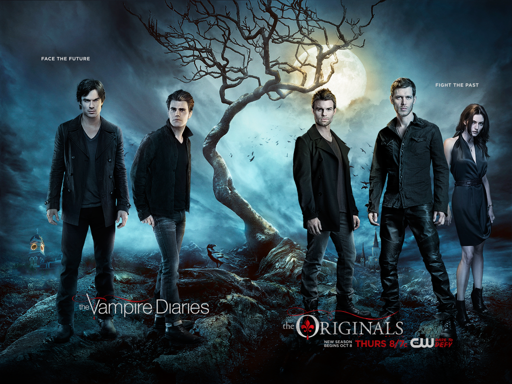

Home TV Shows Music Food
My Favorite TV Shows

The Originals and the Vampire Diaries
Both of these shows are shows about Vampires. Seeing as I'm obsessed with anything mythical, I can't get enough of these two shows. I have crushes on most of the boys and the girls are awesome in the show, too. From vampires and werewolves to witches and hybrids, this show has it all. Vampire Diaries; based on two vampire brother who have been alive (but technacially dead) for a long time have been through it all and The Originals; based on the first (hence Original) vampires have been through more than everything. Watching these shows make me happy and I look forward to them every week.
Young Justice
The junior league for the Justice League. They are legitimately my aspiration. Okay, of coarse I know I can't be like KF [Kid Flash} or Martian Girl but I really love them and I love watching them. Seeing them work together and combine all their super powers; Aqualad, KF, Robin, Martian girl and Super boy, to defeat enemies is always really cool.